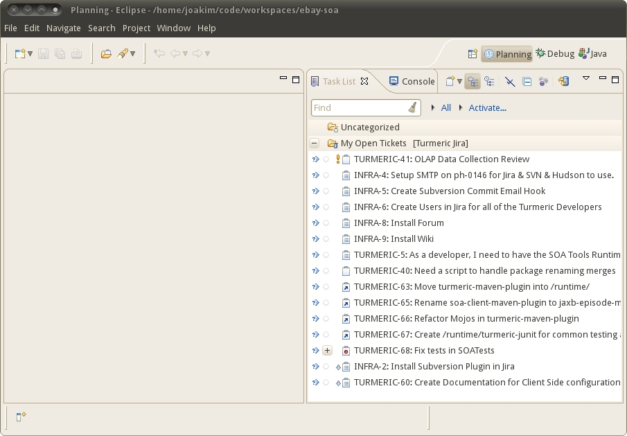

Prerequisites:
First thing to do when Eclipse is started, is to open up the 'Planning' Perspective.


Now we want to add a 'Turmeric Jira' Task Repository that provides the source for our queries. (more on queries later)
Open the pull down in the task list tab (the button/icon has a down arrow).
Choose the option for "Add Repository...".

You will likely see a list of Repository types.
Jira is not listed by default.
Click "Install More Connectors".
Type "Atlassian" in the find box.
Select/Check the Jira entry and click the button for "Finish".
After a few dialogs to verify the license and whatnot of the connector,
you will likely see a dialog asking you to restart.
Go ahead and restart the eclipse session.

When you get back into eclipse, re-open the "Add Repository..." dialog and you should now have a choise for "JIRA".
Choose "JIRA" and click "Next".

Provide the details needed in the dialog below.
(Obviously, use your own userid and password)
Validate your setup, click the "Validate Settings" button.
You should see a message in the top of the dialog that says
"Authentication credentials are valid."
Click the "Finish" button.

When you are done adding the new task repository, Eclipse will
ask you if you want to setup a new query. Go ahead and do so.
Click "Yes".

We are creating a new Query.
Use the "Create query using form" option.
For this section, fill out the following values.
| Query Title: | My Open Tickets |
|---|---|
| Project: | All Projects |
| Type: | Any |
| Assigned To: | (Specified User): {your userid} |
| Status: | Open, In Progress, Reopened |
| Resolution: | Unresolved |
Click "Finish" button.

After some initial synchronization, you should now have a list of any of your open tasks from Jira.
